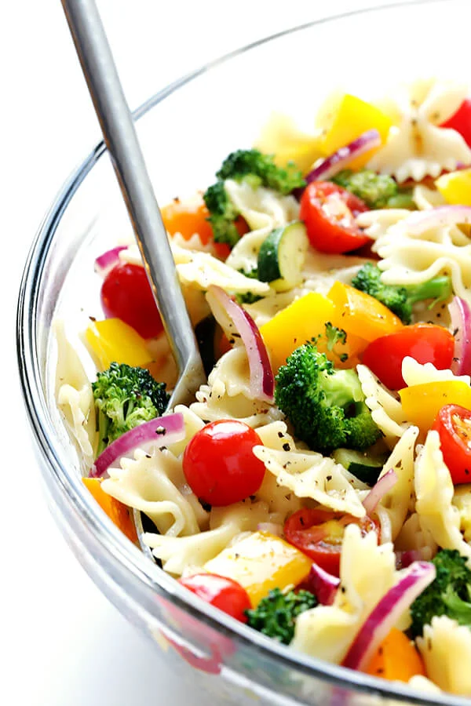

Pasta Salad

This pasta salad recipe is easy to whip up with whatever vegetables you have on hand, and great for meal prep.
Ingredients
- Dry pasta (12 oz)
- Olive oil (2-3 tbsp)
- Zucchini (1, chopped)
- Broccoli (3 cups, chopped florets)
- Bell pepper (2, cored and diced)
- Cherry or grape tomatoes (1 cup, halved)
- Garlic cloves (3, minced)
- Salt and pepper
- Red onion (1/2, thinly sliced)
- White balsamic vinaigrette or Italian dressing (1/2 cup)
- (Optional) Grated Parmesan cheese to top or crumbled feta to mix in
Instructions
- Cook the pasta in generously salted water according to package instructions. Drain pasta and rinse under cold water until no longer hot. Set aside.
-
While pasta is cooking, heat oil (1 tbsp) in a large saute pan over medium-high heat. Add the zucchini and broccoli florets and saute for 3 minutes,
stirring occasionally. Stir in the remaining oil, then add the bell peppers, tomatoes, garlic, and a few generous pinches of salt and pepper, and stir
to combine. Continue sauteing for 4-5 more minutes, stirring occasionally, until the vegetables are cooked to your desired level of doneness. Stir
in the red onion and saute for 1 more minute.
-
Once the veggies and the pasta are all cooked, add them together in the large stockpot and drizzle with the vinaigrette. Toss until the pasta and
veggies are evenly coated with the vinaigrette.
- Optionally, top with grated Parmesan or stir in crumbled feta.
- Serve immediately, or refrigerate in a sealed container for up to 3 days.